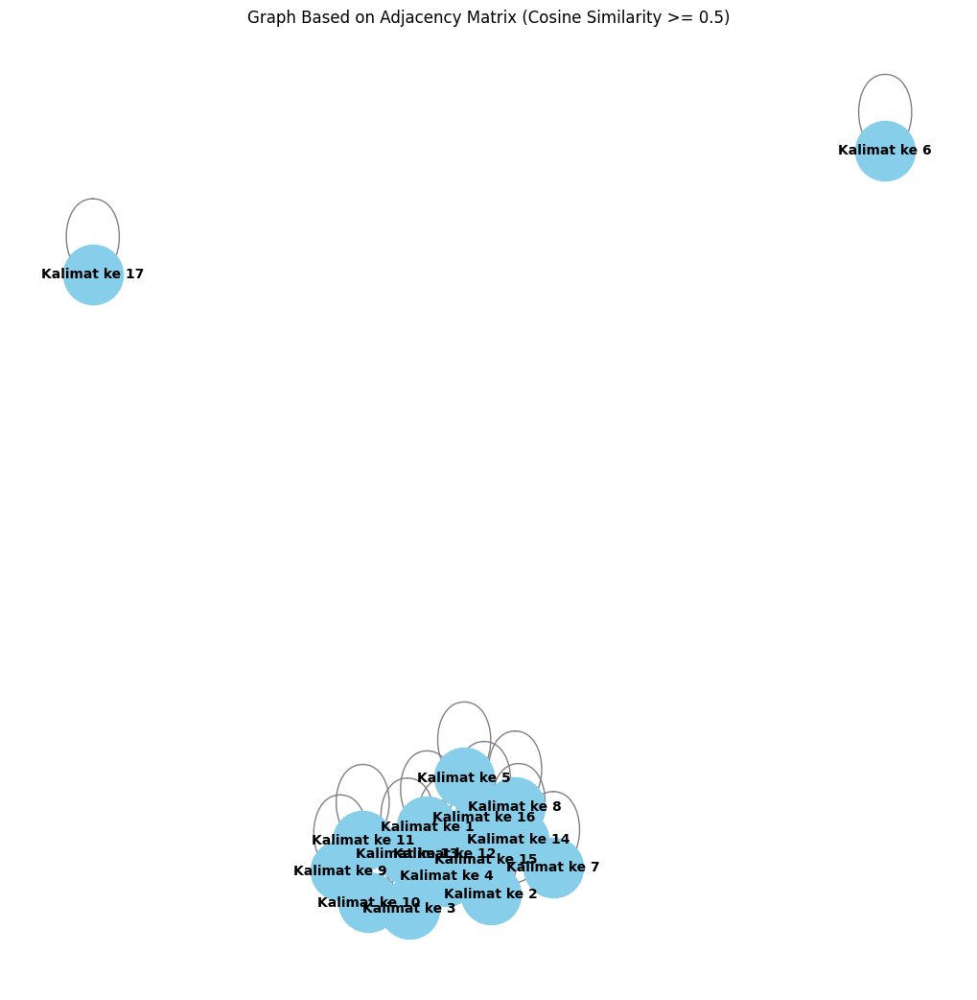

Tugas 4 - Graph#
Nama : Achmad Baharuddin Akbar
NIM : 210411100001
from google.colab import drive
drive.mount('/content/drive')
Mounted at /content/drive
import pandas as pd
import numpy as np
import re
import nltk
!pip install Sastrawi
nltk.download('punkt')
from nltk.corpus import stopwords
#stemming
from Sastrawi.Stemmer.StemmerFactory import StemmerFactory
from sklearn.feature_extraction.text import TfidfVectorizer
from sklearn.metrics.pairwise import cosine_similarity
import nltk
from nltk.tokenize import sent_tokenize
import networkx as nx
import matplotlib.pyplot as plt
Requirement already satisfied: Sastrawi in /usr/local/lib/python3.10/dist-packages (1.0.1)
[nltk_data] Downloading package punkt to /root/nltk_data...
[nltk_data] Unzipping tokenizers/punkt.zip.
# Baca file CSV
df = pd.read_csv("/content/drive/MyDrive/PPW-A/report/tugas-ppw/data_berita_detik.csv")
df.head()
| judul | tanggal | isi | kategori | |
|---|---|---|---|---|
| 0 | Menyoal Transplantasi Hati, Prosedur yang Baka... | Selasa, 08 Okt 2024 18:00 WIB | Jakarta - Politikus Demokrat Andi Arief bakal ... | Kesehatan |
| 1 | PPDS FK Unsrat-RS Kandou Disetop terkait Bully... | Selasa, 08 Okt 2024 17:01 WIB | Jakarta - Kementerian Kesehatan RI (Kemenkes) ... | Kesehatan |
| 2 | 7 Bumbu Dapur yang Bisa Bantu BB Cepat Turun, ... | Selasa, 08 Okt 2024 16:12 WIB | Jakarta - Demi bisa menurunkan berat badan, me... | Kesehatan |
| 3 | Pungli di PPDS FK Unsrat Disebut Puluhan Juta,... | Selasa, 08 Okt 2024 15:14 WIB | Jakarta - Kementerian Kesehatan RI memberhenti... | Kesehatan |
| 4 | Lagi! Kemenkes Bekukan PPDS FK Unsrat-RS Kando... | Selasa, 08 Okt 2024 14:35 WIB | Jakarta - Kementerian Kesehatan RI menyetop se... | Kesehatan |
# mengambil satu sample berita
sample_berita = df['isi'].iloc[4]
print(sample_berita)
Jakarta - Kementerian Kesehatan RI menyetop sementara kegiatan prodi ilmu penyakit dalam Fakultas Kedokteran Universitas Sam Ratulangi (Unsrat) di RSUP Prof Dr dr R D Kandou, buntut temuan kasus bullying atau perundungan. Sedikitnya ada tiga pertimbangan di balik pemberhantian sementara FK Unsrat, termasuk pemungutan uang di luar biaya pendidikan. Perundungan dilakukan peserta PPDS (Program Pendidikan Dokter Spesialis) senior kepada junior. "Terdapat permintaan pembayaran atau pungutan liar oleh PPDS senior penyakit dalam kepada PPDS junior dan calon PPDS penyakit dalam," tutur Direktur Pelayanan Kesehatan Kemenkes RI Azhar Jaya dalam surat instruksi yang dirilis 5 Oktober. Surat tersebut telah dikonfirmasi juru bicara Kemenkes RI Mohammad Syahril. "Iya benar, sama kasusnya seperti Undip ya. Kita memberlakukan ini agar memberikan ruang perbaikan di FK terkait," katanya kepada detikcom Selasa (8/10/2024). Pihak Kemenkes RI juga disebut sudah melakukan peneguran sebelum akhirnya memutuskan penghentian sementara prodi ilmu penyakit dalam di FK Unsrat. Namun, perundungan dilaporkan masih terus berlanjut. "Masih terjadinya kejadian perundungan walaupun telah diberi peringatan oleh Kementerian Kesehatan. Kejadian perundungan dalam bentuk ancaman dan kekerasan verbal dan non verbal kepada PPDS junior," sambung Azhar. Bullying yang masih berlanjut ditegaskan Azhar menandakan adanya normalisasi perundungan di lingkup FK terkait. "Terdapat pemahaman dari PPDS senior, DPJP dan supervisor bahwa kejadian perundungan di pendidikan dokter adalah hal biasa dan banyak terjadi di tempat lain," sambung instruksi surat tersebut. Dengan pertimbangan tiga hal di atas, Kemenkes RI memutuskan sementara kerja sama RSUP Kandou dengan FK Unsrat. "Memperhatikan hal tersebut dengan ini diinstruksikan kepada saudara untuk membekukan sementara perjanjian kerja sama antara RSUP Prof DR dr D Kandou manado dengan Fakultas Kedokteran Universitas Sam Ratulangi untuk program studi ilmu penyakit dalam sebagai upaya preventif sampai langkah perbaikan dari FK Unsrat dan RSUP Prof Dr R D Kandou Manado dalam mencegah jatuhnya korban," demikian akhir penutup surat terkait. Kemenkes RI meminta pelaksanaan pemberhentian sementara prodi ilmu penyakit dalam FK Unsrat dilakukan selambatnya sepekan setelah surat dikeluarkan. (naf/up)
# Membuat list untuk menyimpan hasil
result_list = []
# Pisahkan kalimat berdasarkan titik
sentences = sample_berita.split('.') # Pisahkan kalimat berdasarkan titik
sentences = [s.strip() for s in sentences if s.strip()] # Hilangkan spasi berlebih dan kosong
# Looping untuk menambahkan setiap kalimat ke result_list
for i, sentence in enumerate(sentences, 1):
result_list.append({'kalimat ke n': f"Kalimat ke {i}", 'kalimat': sentence})
# Membuat DataFrame dari hasil pemisahan
result_df = pd.DataFrame(result_list)
# Tampilkan DataFrame
result_df
| kalimat ke n | kalimat | |
|---|---|---|
| 0 | Kalimat ke 1 | Jakarta - Kementerian Kesehatan RI menyetop se... |
| 1 | Kalimat ke 2 | Sedikitnya ada tiga pertimbangan di balik pemb... |
| 2 | Kalimat ke 3 | Perundungan dilakukan peserta PPDS (Program Pe... |
| 3 | Kalimat ke 4 | "Terdapat permintaan pembayaran atau pungutan ... |
| 4 | Kalimat ke 5 | Surat tersebut telah dikonfirmasi juru bicara ... |
| 5 | Kalimat ke 6 | "Iya benar, sama kasusnya seperti Undip ya |
| 6 | Kalimat ke 7 | Kita memberlakukan ini agar memberikan ruang p... |
| 7 | Kalimat ke 8 | Pihak Kemenkes RI juga disebut sudah melakukan... |
| 8 | Kalimat ke 9 | Namun, perundungan dilaporkan masih terus berl... |
| 9 | Kalimat ke 10 | "Masih terjadinya kejadian perundungan walaupu... |
| 10 | Kalimat ke 11 | Kejadian perundungan dalam bentuk ancaman dan ... |
| 11 | Kalimat ke 12 | Bullying yang masih berlanjut ditegaskan Azhar... |
| 12 | Kalimat ke 13 | "Terdapat pemahaman dari PPDS senior, DPJP dan... |
| 13 | Kalimat ke 14 | Dengan pertimbangan tiga hal di atas, Kemenkes... |
| 14 | Kalimat ke 15 | "Memperhatikan hal tersebut dengan ini diinstr... |
| 15 | Kalimat ke 16 | Kemenkes RI meminta pelaksanaan pemberhentian ... |
| 16 | Kalimat ke 17 | (naf/up) |
# Download stopwords untuk bahasa Indonesia
nltk.download('stopwords')
stop_words = stopwords.words('indonesian')
# Fungsi preprocessing yang disesuaikan
def remove_url(data_berita):
url = re.compile(r'https?://\S+|www\.S+')
return url.sub(r'', data_berita)
def remove_html(data_berita):
html = re.compile(r'<.#?>')
return html.sub(r'', data_berita)
def remove_emoji(data_berita):
emoji_pattern = re.compile("["
u"\U0001F600-\U0001F64F" # emoticon
u"\U0001F300-\U0001F5FF" # symbols & pictographs
u"\U0001F680-\U0001F6FF" # transport & map symbols
u"\U0001F1E0-\U0001F1FF" # flags (iOS)
"]+", flags=re.UNICODE)
return emoji_pattern.sub(r'', data_berita)
def remove_numbers(data_berita):
data_berita = re.sub(r'\d+', '', data_berita)
return data_berita
def remove_symbols(data_berita):
data_berita = re.sub(r'[^a-zA-Z0-9\s]', '', data_berita)
return data_berita
def case_folding(text):
if isinstance(text, str):
return text.lower()
return text
def tokenize(text):
return text.split()
def remove_stopwords(text):
return [word for word in text if word not in stop_words]
# Inisialisasi stemmer
factory = StemmerFactory()
stemmer = factory.create_stemmer()
def stemming(text):
return [stemmer.stem(word) for word in text]
# Looping setiap kalimat di dataframe 'result_df'
result_df['clean'] = result_df['kalimat'].apply(remove_url)
result_df['clean'] = result_df['clean'].apply(remove_html)
result_df['clean'] = result_df['clean'].apply(remove_emoji)
result_df['clean'] = result_df['clean'].apply(remove_symbols)
result_df['clean'] = result_df['clean'].apply(remove_numbers)
result_df['clean'] = result_df['clean'].apply(case_folding)
result_df['tokenize'] = result_df['clean'].apply(tokenize)
result_df['stopword removal'] = result_df['tokenize'].apply(remove_stopwords)
result_df['stemming'] = result_df['stopword removal'].apply(stemming)
# Gabungkan kata setelah stemming
result_df['final'] = result_df['stemming'].apply(lambda x: ' '.join(x))
# Tampilkan hasil dataframe
result_df[['kalimat ke n', 'final']]
[nltk_data] Downloading package stopwords to /root/nltk_data...
[nltk_data] Unzipping corpora/stopwords.zip.
| kalimat ke n | final | |
|---|---|---|
| 0 | Kalimat ke 1 | jakarta menteri sehat ri setop giat prodi ilmu... |
| 1 | Kalimat ke 2 | timbang pemberhantian fk unsrat mungut uang bi... |
| 2 | Kalimat ke 3 | rundung serta ppds program didik dokter spesia... |
| 3 | Kalimat ke 4 | minta bayar pungut liar ppds senior sakit ppds... |
| 4 | Kalimat ke 5 | surat konfirmasi juru bicara kemenkes ri moham... |
| 5 | Kalimat ke 6 | iya kasus undip ya |
| 6 | Kalimat ke 7 | laku ruang baik fk kait detikcom selasa |
| 7 | Kalimat ke 8 | kemenkes ri tegur putus henti prodi ilmu sakit... |
| 8 | Kalimat ke 9 | rundung lapor lanjut |
| 9 | Kalimat ke 10 | jadi rundung ingat menteri sehat |
| 10 | Kalimat ke 11 | jadi rundung bentuk ancam keras verbal non ver... |
| 11 | Kalimat ke 12 | bullying lanjut azhar tanda normalisasi rundun... |
| 12 | Kalimat ke 13 | paham ppds senior dpjp supervisor jadi rundung... |
| 13 | Kalimat ke 14 | timbang kemenkes ri putus kerja rsup kandou fk... |
| 14 | Kalimat ke 15 | perhati instruksi saudara beku janji kerja rsu... |
| 15 | Kalimat ke 16 | kemenkes ri laksana henti prodi ilmu sakit fk ... |
| 16 | Kalimat ke 17 | nafup |
# Gabungkan semua kalimat hasil stemming menjadi dokumen untuk tiap kalimat
documents = result_df['final'].tolist()
# Inisialisasi TF-IDF Vectorizer
tfidf_vectorizer = TfidfVectorizer()
# Terapkan TF-IDF ke dokumen (kalimat yang sudah dipreproses)
tfidf_matrix = tfidf_vectorizer.fit_transform(documents)
# Mendapatkan nama-nama fitur (kata-kata)
feature_names = tfidf_vectorizer.get_feature_names_out()
# Mengubah hasil TF-IDF menjadi dataframe
tfidf_df = pd.DataFrame(tfidf_matrix.toarray(), columns=feature_names)
# Tambahkan kolom 'no' dan 'kalimat ke n' untuk identifikasi
tfidf_df.insert(0, 'kalimat ke n', result_df['kalimat ke n'])
# Tampilkan dataframe dengan skor TF-IDF
tfidf_df
| kalimat ke n | ancam | azhar | baik | bayar | beku | bentuk | biaya | bicara | bullying | ... | temu | timbang | tutup | uang | undip | universitas | unsrat | upaya | verbal | ya | |
|---|---|---|---|---|---|---|---|---|---|---|---|---|---|---|---|---|---|---|---|---|---|
| 0 | Kalimat ke 1 | 0.000000 | 0.000000 | 0.000000 | 0.000000 | 0.000000 | 0.000000 | 0.000000 | 0.000000 | 0.203840 | ... | 0.233444 | 0.000000 | 0.000000 | 0.000000 | 0.0 | 0.203840 | 0.141974 | 0.000000 | 0.000000 | 0.0 |
| 1 | Kalimat ke 2 | 0.000000 | 0.000000 | 0.000000 | 0.000000 | 0.000000 | 0.000000 | 0.406003 | 0.000000 | 0.000000 | ... | 0.000000 | 0.354515 | 0.000000 | 0.406003 | 0.0 | 0.000000 | 0.246920 | 0.000000 | 0.000000 | 0.0 |
| 2 | Kalimat ke 3 | 0.000000 | 0.000000 | 0.000000 | 0.000000 | 0.000000 | 0.000000 | 0.000000 | 0.000000 | 0.000000 | ... | 0.000000 | 0.000000 | 0.000000 | 0.000000 | 0.0 | 0.000000 | 0.000000 | 0.000000 | 0.000000 | 0.0 |
| 3 | Kalimat ke 4 | 0.000000 | 0.172550 | 0.000000 | 0.220313 | 0.000000 | 0.000000 | 0.000000 | 0.000000 | 0.000000 | ... | 0.000000 | 0.000000 | 0.000000 | 0.000000 | 0.0 | 0.000000 | 0.000000 | 0.000000 | 0.000000 | 0.0 |
| 4 | Kalimat ke 5 | 0.000000 | 0.000000 | 0.000000 | 0.000000 | 0.000000 | 0.000000 | 0.000000 | 0.400591 | 0.000000 | ... | 0.000000 | 0.000000 | 0.000000 | 0.000000 | 0.0 | 0.000000 | 0.000000 | 0.000000 | 0.000000 | 0.0 |
| 5 | Kalimat ke 6 | 0.000000 | 0.000000 | 0.000000 | 0.000000 | 0.000000 | 0.000000 | 0.000000 | 0.000000 | 0.000000 | ... | 0.000000 | 0.000000 | 0.000000 | 0.000000 | 0.5 | 0.000000 | 0.000000 | 0.000000 | 0.000000 | 0.5 |
| 6 | Kalimat ke 7 | 0.000000 | 0.000000 | 0.365843 | 0.000000 | 0.000000 | 0.000000 | 0.000000 | 0.000000 | 0.000000 | ... | 0.000000 | 0.000000 | 0.000000 | 0.000000 | 0.0 | 0.000000 | 0.000000 | 0.000000 | 0.000000 | 0.0 |
| 7 | Kalimat ke 8 | 0.000000 | 0.000000 | 0.000000 | 0.000000 | 0.000000 | 0.000000 | 0.000000 | 0.000000 | 0.000000 | ... | 0.000000 | 0.000000 | 0.000000 | 0.000000 | 0.0 | 0.000000 | 0.257702 | 0.000000 | 0.000000 | 0.0 |
| 8 | Kalimat ke 9 | 0.000000 | 0.000000 | 0.000000 | 0.000000 | 0.000000 | 0.000000 | 0.000000 | 0.000000 | 0.000000 | ... | 0.000000 | 0.000000 | 0.000000 | 0.000000 | 0.0 | 0.000000 | 0.000000 | 0.000000 | 0.000000 | 0.0 |
| 9 | Kalimat ke 10 | 0.000000 | 0.000000 | 0.000000 | 0.000000 | 0.000000 | 0.000000 | 0.000000 | 0.000000 | 0.000000 | ... | 0.000000 | 0.000000 | 0.000000 | 0.000000 | 0.0 | 0.000000 | 0.000000 | 0.000000 | 0.000000 | 0.0 |
| 10 | Kalimat ke 11 | 0.295754 | 0.231635 | 0.000000 | 0.000000 | 0.000000 | 0.295754 | 0.000000 | 0.000000 | 0.000000 | ... | 0.000000 | 0.000000 | 0.000000 | 0.000000 | 0.0 | 0.000000 | 0.000000 | 0.000000 | 0.591508 | 0.0 |
| 11 | Kalimat ke 12 | 0.000000 | 0.309749 | 0.000000 | 0.000000 | 0.000000 | 0.000000 | 0.000000 | 0.000000 | 0.345335 | ... | 0.000000 | 0.000000 | 0.000000 | 0.000000 | 0.0 | 0.000000 | 0.000000 | 0.000000 | 0.000000 | 0.0 |
| 12 | Kalimat ke 13 | 0.000000 | 0.000000 | 0.000000 | 0.000000 | 0.000000 | 0.000000 | 0.000000 | 0.000000 | 0.000000 | ... | 0.000000 | 0.000000 | 0.000000 | 0.000000 | 0.0 | 0.000000 | 0.000000 | 0.000000 | 0.000000 | 0.0 |
| 13 | Kalimat ke 14 | 0.000000 | 0.000000 | 0.000000 | 0.000000 | 0.000000 | 0.000000 | 0.000000 | 0.000000 | 0.000000 | ... | 0.000000 | 0.390282 | 0.000000 | 0.000000 | 0.0 | 0.000000 | 0.271832 | 0.000000 | 0.000000 | 0.0 |
| 14 | Kalimat ke 15 | 0.000000 | 0.000000 | 0.138143 | 0.000000 | 0.158206 | 0.000000 | 0.000000 | 0.000000 | 0.000000 | ... | 0.000000 | 0.000000 | 0.158206 | 0.000000 | 0.0 | 0.138143 | 0.096217 | 0.158206 | 0.000000 | 0.0 |
| 15 | Kalimat ke 16 | 0.000000 | 0.000000 | 0.000000 | 0.000000 | 0.000000 | 0.000000 | 0.000000 | 0.000000 | 0.000000 | ... | 0.000000 | 0.000000 | 0.000000 | 0.000000 | 0.0 | 0.000000 | 0.211894 | 0.000000 | 0.000000 | 0.0 |
| 16 | Kalimat ke 17 | 0.000000 | 0.000000 | 0.000000 | 0.000000 | 0.000000 | 0.000000 | 0.000000 | 0.000000 | 0.000000 | ... | 0.000000 | 0.000000 | 0.000000 | 0.000000 | 0.0 | 0.000000 | 0.000000 | 0.000000 | 0.000000 | 0.0 |
17 rows × 104 columns
# Menghitung cosine similarity antar kalimat berdasarkan TF-IDF
cosine_sim = cosine_similarity(tfidf_matrix)
# Membuat dataframe untuk menyimpan hasil cosine similarity
cosine_sim_df = pd.DataFrame(cosine_sim, index=result_df['kalimat ke n'], columns=result_df['kalimat ke n'])
# Tampilkan matriks cosine similarity
cosine_sim_df
| kalimat ke n | Kalimat ke 1 | Kalimat ke 2 | Kalimat ke 3 | Kalimat ke 4 | Kalimat ke 5 | Kalimat ke 6 | Kalimat ke 7 | Kalimat ke 8 | Kalimat ke 9 | Kalimat ke 10 | Kalimat ke 11 | Kalimat ke 12 | Kalimat ke 13 | Kalimat ke 14 | Kalimat ke 15 | Kalimat ke 16 | Kalimat ke 17 |
|---|---|---|---|---|---|---|---|---|---|---|---|---|---|---|---|---|---|
| kalimat ke n | |||||||||||||||||
| Kalimat ke 1 | 1.000000 | 0.035056 | 0.079469 | 0.094888 | 0.034589 | 0.0 | 0.000000 | 0.226814 | 0.051888 | 0.217702 | 0.022150 | 0.100012 | 0.068547 | 0.205194 | 0.495692 | 0.186496 | 0.0 |
| Kalimat ke 2 | 0.035056 | 1.000000 | 0.102173 | 0.000000 | 0.000000 | 0.0 | 0.054573 | 0.118824 | 0.000000 | 0.000000 | 0.000000 | 0.051514 | 0.088130 | 0.263700 | 0.044365 | 0.097702 | 0.0 |
| Kalimat ke 3 | 0.079469 | 0.102173 | 1.000000 | 0.248891 | 0.000000 | 0.0 | 0.000000 | 0.000000 | 0.091189 | 0.072343 | 0.175108 | 0.052053 | 0.372460 | 0.000000 | 0.082521 | 0.000000 | 0.0 |
| Kalimat ke 4 | 0.094888 | 0.000000 | 0.248891 | 1.000000 | 0.108692 | 0.0 | 0.000000 | 0.155191 | 0.000000 | 0.074280 | 0.179425 | 0.053447 | 0.248272 | 0.078848 | 0.066431 | 0.160676 | 0.0 |
| Kalimat ke 5 | 0.034589 | 0.000000 | 0.000000 | 0.108692 | 1.000000 | 0.0 | 0.000000 | 0.135916 | 0.000000 | 0.000000 | 0.000000 | 0.000000 | 0.061075 | 0.143368 | 0.027305 | 0.171889 | 0.0 |
| Kalimat ke 6 | 0.000000 | 0.000000 | 0.000000 | 0.000000 | 0.000000 | 1.0 | 0.000000 | 0.000000 | 0.000000 | 0.000000 | 0.000000 | 0.000000 | 0.000000 | 0.000000 | 0.000000 | 0.000000 | 0.0 |
| Kalimat ke 7 | 0.000000 | 0.054573 | 0.000000 | 0.000000 | 0.000000 | 0.0 | 1.000000 | 0.056956 | 0.000000 | 0.000000 | 0.000000 | 0.154802 | 0.000000 | 0.060079 | 0.112463 | 0.046832 | 0.0 |
| Kalimat ke 8 | 0.226814 | 0.118824 | 0.000000 | 0.155191 | 0.135916 | 0.0 | 0.056956 | 1.000000 | 0.000000 | 0.000000 | 0.000000 | 0.053763 | 0.000000 | 0.426865 | 0.109303 | 0.562047 | 0.0 |
| Kalimat ke 9 | 0.051888 | 0.000000 | 0.091189 | 0.000000 | 0.000000 | 0.0 | 0.000000 | 0.000000 | 1.000000 | 0.122170 | 0.065738 | 0.296823 | 0.078656 | 0.000000 | 0.000000 | 0.000000 | 0.0 |
| Kalimat ke 10 | 0.217702 | 0.000000 | 0.072343 | 0.074280 | 0.000000 | 0.0 | 0.000000 | 0.000000 | 0.122170 | 1.000000 | 0.151867 | 0.069739 | 0.181709 | 0.000000 | 0.000000 | 0.000000 | 0.0 |
| Kalimat ke 11 | 0.022150 | 0.000000 | 0.175108 | 0.179425 | 0.000000 | 0.0 | 0.000000 | 0.000000 | 0.065738 | 0.151867 | 1.000000 | 0.109274 | 0.230838 | 0.000000 | 0.000000 | 0.000000 | 0.0 |
| Kalimat ke 12 | 0.100012 | 0.051514 | 0.052053 | 0.053447 | 0.000000 | 0.0 | 0.154802 | 0.053763 | 0.296823 | 0.069739 | 0.109274 | 1.000000 | 0.044899 | 0.056711 | 0.058454 | 0.044206 | 0.0 |
| Kalimat ke 13 | 0.068547 | 0.088130 | 0.372460 | 0.248272 | 0.061075 | 0.0 | 0.000000 | 0.000000 | 0.078656 | 0.181709 | 0.230838 | 0.044899 | 1.000000 | 0.000000 | 0.086956 | 0.053120 | 0.0 |
| Kalimat ke 14 | 0.205194 | 0.263700 | 0.000000 | 0.078848 | 0.143368 | 0.0 | 0.060079 | 0.426865 | 0.000000 | 0.000000 | 0.000000 | 0.056711 | 0.000000 | 1.000000 | 0.276258 | 0.232253 | 0.0 |
| Kalimat ke 15 | 0.495692 | 0.044365 | 0.082521 | 0.066431 | 0.027305 | 0.0 | 0.112463 | 0.109303 | 0.000000 | 0.000000 | 0.000000 | 0.058454 | 0.086956 | 0.276258 | 1.000000 | 0.113622 | 0.0 |
| Kalimat ke 16 | 0.186496 | 0.097702 | 0.000000 | 0.160676 | 0.171889 | 0.0 | 0.046832 | 0.562047 | 0.000000 | 0.000000 | 0.000000 | 0.044206 | 0.053120 | 0.232253 | 0.113622 | 1.000000 | 0.0 |
| Kalimat ke 17 | 0.000000 | 0.000000 | 0.000000 | 0.000000 | 0.000000 | 0.0 | 0.000000 | 0.000000 | 0.000000 | 0.000000 | 0.000000 | 0.000000 | 0.000000 | 0.000000 | 0.000000 | 0.000000 | 1.0 |
from sklearn.metrics import jaccard_score
# Fungsi untuk menghitung Jaccard similarity antar vektor
def calculate_jaccard_similarity(tfidf_matrix):
# Inisialisasi matriks untuk menyimpan hasil Jaccard similarity
num_sentences = tfidf_matrix.shape[0]
jaccard_similarity_matrix = np.zeros((num_sentences, num_sentences))
# Looping untuk menghitung Jaccard similarity antara setiap pasangan kalimat
for i in range(num_sentences):
for j in range(num_sentences):
# Hitung Jaccard similarity berdasarkan vektor biner
jaccard_similarity_matrix[i, j] = jaccard_score(tfidf_matrix[i].toarray()[0] > 0,
tfidf_matrix[j].toarray()[0] > 0)
return jaccard_similarity_matrix
# Hitung Jaccard similarity matriks dari TF-IDF
jaccard_similarity = calculate_jaccard_similarity(tfidf_matrix)
# Membuat DataFrame dari matriks Jaccard similarity
jaccard_df = pd.DataFrame(jaccard_similarity,
index=result_df['kalimat ke n'],
columns=result_df['kalimat ke n'])
# Tampilkan DataFrame Jaccard similarity
jaccard_df
| kalimat ke n | Kalimat ke 1 | Kalimat ke 2 | Kalimat ke 3 | Kalimat ke 4 | Kalimat ke 5 | Kalimat ke 6 | Kalimat ke 7 | Kalimat ke 8 | Kalimat ke 9 | Kalimat ke 10 | Kalimat ke 11 | Kalimat ke 12 | Kalimat ke 13 | Kalimat ke 14 | Kalimat ke 15 | Kalimat ke 16 | Kalimat ke 17 |
|---|---|---|---|---|---|---|---|---|---|---|---|---|---|---|---|---|---|
| kalimat ke n | |||||||||||||||||
| Kalimat ke 1 | 1.000000 | 0.033333 | 0.066667 | 0.075000 | 0.033333 | 0.0 | 0.000000 | 0.178571 | 0.040000 | 0.120000 | 0.030303 | 0.066667 | 0.060606 | 0.142857 | 0.279070 | 0.161290 | 0.0 |
| Kalimat ke 2 | 0.033333 | 1.000000 | 0.062500 | 0.000000 | 0.000000 | 0.0 | 0.071429 | 0.125000 | 0.000000 | 0.000000 | 0.000000 | 0.062500 | 0.052632 | 0.214286 | 0.052632 | 0.105263 | 0.0 |
| Kalimat ke 3 | 0.066667 | 0.062500 | 1.000000 | 0.115385 | 0.000000 | 0.0 | 0.000000 | 0.000000 | 0.090909 | 0.076923 | 0.176471 | 0.058824 | 0.312500 | 0.000000 | 0.051282 | 0.000000 | 0.0 |
| Kalimat ke 4 | 0.075000 | 0.000000 | 0.115385 | 1.000000 | 0.120000 | 0.0 | 0.000000 | 0.111111 | 0.000000 | 0.041667 | 0.107143 | 0.035714 | 0.142857 | 0.074074 | 0.061224 | 0.137931 | 0.0 |
| Kalimat ke 5 | 0.033333 | 0.000000 | 0.000000 | 0.120000 | 1.000000 | 0.0 | 0.000000 | 0.125000 | 0.000000 | 0.000000 | 0.000000 | 0.000000 | 0.052632 | 0.133333 | 0.025641 | 0.166667 | 0.0 |
| Kalimat ke 6 | 0.000000 | 0.000000 | 0.000000 | 0.000000 | 0.000000 | 1.0 | 0.000000 | 0.000000 | 0.000000 | 0.000000 | 0.000000 | 0.000000 | 0.000000 | 0.000000 | 0.000000 | 0.000000 | 0.0 |
| Kalimat ke 7 | 0.000000 | 0.071429 | 0.000000 | 0.000000 | 0.000000 | 0.0 | 1.000000 | 0.062500 | 0.000000 | 0.000000 | 0.000000 | 0.142857 | 0.000000 | 0.066667 | 0.083333 | 0.052632 | 0.0 |
| Kalimat ke 8 | 0.178571 | 0.125000 | 0.000000 | 0.111111 | 0.125000 | 0.0 | 0.062500 | 1.000000 | 0.000000 | 0.000000 | 0.000000 | 0.055556 | 0.000000 | 0.357143 | 0.105263 | 0.533333 | 0.0 |
| Kalimat ke 9 | 0.040000 | 0.000000 | 0.090909 | 0.000000 | 0.000000 | 0.0 | 0.000000 | 0.000000 | 1.000000 | 0.142857 | 0.076923 | 0.200000 | 0.071429 | 0.000000 | 0.000000 | 0.000000 | 0.0 |
| Kalimat ke 10 | 0.120000 | 0.000000 | 0.076923 | 0.041667 | 0.000000 | 0.0 | 0.000000 | 0.000000 | 0.142857 | 1.000000 | 0.142857 | 0.076923 | 0.133333 | 0.000000 | 0.000000 | 0.000000 | 0.0 |
| Kalimat ke 11 | 0.030303 | 0.000000 | 0.176471 | 0.107143 | 0.000000 | 0.0 | 0.000000 | 0.000000 | 0.076923 | 0.142857 | 1.000000 | 0.111111 | 0.210526 | 0.000000 | 0.000000 | 0.000000 | 0.0 |
| Kalimat ke 12 | 0.066667 | 0.062500 | 0.058824 | 0.035714 | 0.000000 | 0.0 | 0.142857 | 0.055556 | 0.200000 | 0.076923 | 0.111111 | 1.000000 | 0.050000 | 0.058824 | 0.051282 | 0.047619 | 0.0 |
| Kalimat ke 13 | 0.060606 | 0.052632 | 0.312500 | 0.142857 | 0.052632 | 0.0 | 0.000000 | 0.000000 | 0.071429 | 0.133333 | 0.210526 | 0.050000 | 1.000000 | 0.000000 | 0.073171 | 0.041667 | 0.0 |
| Kalimat ke 14 | 0.142857 | 0.214286 | 0.000000 | 0.074074 | 0.133333 | 0.0 | 0.066667 | 0.357143 | 0.000000 | 0.000000 | 0.000000 | 0.058824 | 0.000000 | 1.000000 | 0.138889 | 0.222222 | 0.0 |
| Kalimat ke 15 | 0.279070 | 0.052632 | 0.051282 | 0.061224 | 0.025641 | 0.0 | 0.083333 | 0.105263 | 0.000000 | 0.000000 | 0.000000 | 0.051282 | 0.073171 | 0.138889 | 1.000000 | 0.125000 | 0.0 |
| Kalimat ke 16 | 0.161290 | 0.105263 | 0.000000 | 0.137931 | 0.166667 | 0.0 | 0.052632 | 0.533333 | 0.000000 | 0.000000 | 0.000000 | 0.047619 | 0.041667 | 0.222222 | 0.125000 | 1.000000 | 0.0 |
| Kalimat ke 17 | 0.000000 | 0.000000 | 0.000000 | 0.000000 | 0.000000 | 0.0 | 0.000000 | 0.000000 | 0.000000 | 0.000000 | 0.000000 | 0.000000 | 0.000000 | 0.000000 | 0.000000 | 0.000000 | 1.0 |
# Tetapkan ambang batas (threshold) 0.7
threshold = 0.005
# Buat matriks adjacency: jika cosine similarity >= 0.6, maka 1; jika tidak, maka 0
adjacency_matrix = np.where(cosine_sim >= threshold, 1, 0)
# Buat dataframe untuk menampilkan matriks adjacency
adjacency_df = pd.DataFrame(adjacency_matrix, index=result_df['kalimat ke n'], columns=result_df['kalimat ke n'])
# Tampilkan matriks adjacency
adjacency_df
| kalimat ke n | Kalimat ke 1 | Kalimat ke 2 | Kalimat ke 3 | Kalimat ke 4 | Kalimat ke 5 | Kalimat ke 6 | Kalimat ke 7 | Kalimat ke 8 | Kalimat ke 9 | Kalimat ke 10 | Kalimat ke 11 | Kalimat ke 12 | Kalimat ke 13 | Kalimat ke 14 | Kalimat ke 15 | Kalimat ke 16 | Kalimat ke 17 |
|---|---|---|---|---|---|---|---|---|---|---|---|---|---|---|---|---|---|
| kalimat ke n | |||||||||||||||||
| Kalimat ke 1 | 1 | 1 | 1 | 1 | 1 | 0 | 0 | 1 | 1 | 1 | 1 | 1 | 1 | 1 | 1 | 1 | 0 |
| Kalimat ke 2 | 1 | 1 | 1 | 0 | 0 | 0 | 1 | 1 | 0 | 0 | 0 | 1 | 1 | 1 | 1 | 1 | 0 |
| Kalimat ke 3 | 1 | 1 | 1 | 1 | 0 | 0 | 0 | 0 | 1 | 1 | 1 | 1 | 1 | 0 | 1 | 0 | 0 |
| Kalimat ke 4 | 1 | 0 | 1 | 1 | 1 | 0 | 0 | 1 | 0 | 1 | 1 | 1 | 1 | 1 | 1 | 1 | 0 |
| Kalimat ke 5 | 1 | 0 | 0 | 1 | 1 | 0 | 0 | 1 | 0 | 0 | 0 | 0 | 1 | 1 | 1 | 1 | 0 |
| Kalimat ke 6 | 0 | 0 | 0 | 0 | 0 | 1 | 0 | 0 | 0 | 0 | 0 | 0 | 0 | 0 | 0 | 0 | 0 |
| Kalimat ke 7 | 0 | 1 | 0 | 0 | 0 | 0 | 1 | 1 | 0 | 0 | 0 | 1 | 0 | 1 | 1 | 1 | 0 |
| Kalimat ke 8 | 1 | 1 | 0 | 1 | 1 | 0 | 1 | 1 | 0 | 0 | 0 | 1 | 0 | 1 | 1 | 1 | 0 |
| Kalimat ke 9 | 1 | 0 | 1 | 0 | 0 | 0 | 0 | 0 | 1 | 1 | 1 | 1 | 1 | 0 | 0 | 0 | 0 |
| Kalimat ke 10 | 1 | 0 | 1 | 1 | 0 | 0 | 0 | 0 | 1 | 1 | 1 | 1 | 1 | 0 | 0 | 0 | 0 |
| Kalimat ke 11 | 1 | 0 | 1 | 1 | 0 | 0 | 0 | 0 | 1 | 1 | 1 | 1 | 1 | 0 | 0 | 0 | 0 |
| Kalimat ke 12 | 1 | 1 | 1 | 1 | 0 | 0 | 1 | 1 | 1 | 1 | 1 | 1 | 1 | 1 | 1 | 1 | 0 |
| Kalimat ke 13 | 1 | 1 | 1 | 1 | 1 | 0 | 0 | 0 | 1 | 1 | 1 | 1 | 1 | 0 | 1 | 1 | 0 |
| Kalimat ke 14 | 1 | 1 | 0 | 1 | 1 | 0 | 1 | 1 | 0 | 0 | 0 | 1 | 0 | 1 | 1 | 1 | 0 |
| Kalimat ke 15 | 1 | 1 | 1 | 1 | 1 | 0 | 1 | 1 | 0 | 0 | 0 | 1 | 1 | 1 | 1 | 1 | 0 |
| Kalimat ke 16 | 1 | 1 | 0 | 1 | 1 | 0 | 1 | 1 | 0 | 0 | 0 | 1 | 1 | 1 | 1 | 1 | 0 |
| Kalimat ke 17 | 0 | 0 | 0 | 0 | 0 | 0 | 0 | 0 | 0 | 0 | 0 | 0 | 0 | 0 | 0 | 0 | 1 |
# Buat graf dari matriks adjacency
G = nx.from_numpy_array(adjacency_matrix)
# Atur label node agar sesuai dengan 'kalimat ke n'
mapping = {i: f"Kalimat ke {i+1}" for i in range(len(result_df))}
G = nx.relabel_nodes(G, mapping)
# Menggambar graf
plt.figure(figsize=(10, 10))
pos = nx.spring_layout(G) # Atur layout graf
nx.draw(G, pos, with_labels=True, node_color='skyblue', node_size=2000, font_size=10, font_color='black', edge_color='gray', linewidths=1, font_weight='bold')
# Tampilkan graf
plt.title("Graph Based on Adjacency Matrix (Cosine Similarity >= 0.5)")
plt.show()

# Menghitung betweenness centrality
betweenness_centrality = nx.betweenness_centrality(G)
# Menghitung degree centrality
degree_centrality = nx.degree_centrality(G)
# Menghitung closeness centrality
closeness_centrality = nx.closeness_centrality(G)
# Buat dataframe untuk menampilkan hasil centrality
centrality_df = pd.DataFrame({
'Kalimat': list(betweenness_centrality.keys()),
'Betweenness Centrality': list(betweenness_centrality.values()),
'Degree Centrality': list(degree_centrality.values()),
'Closeness Centrality': list(closeness_centrality.values())
})
# Tampilkan dataframe centrality
centrality_df
| Kalimat | Betweenness Centrality | Degree Centrality | Closeness Centrality | |
|---|---|---|---|---|
| 0 | Kalimat ke 1 | 0.036181 | 0.7500 | 0.680556 |
| 1 | Kalimat ke 2 | 0.019236 | 0.5625 | 0.583333 |
| 2 | Kalimat ke 3 | 0.021954 | 0.6875 | 0.644737 |
| 3 | Kalimat ke 4 | 0.054792 | 0.8125 | 0.720588 |
| 4 | Kalimat ke 5 | 0.002778 | 0.4375 | 0.532609 |
| 5 | Kalimat ke 6 | 0.000000 | 0.1250 | 0.000000 |
| 6 | Kalimat ke 7 | 0.001190 | 0.4375 | 0.532609 |
| 7 | Kalimat ke 8 | 0.023968 | 0.6875 | 0.644737 |
| 8 | Kalimat ke 9 | 0.002431 | 0.5000 | 0.556818 |
| 9 | Kalimat ke 10 | 0.003819 | 0.5625 | 0.583333 |
| 10 | Kalimat ke 11 | 0.002431 | 0.5000 | 0.556818 |
| 11 | Kalimat ke 12 | 0.078413 | 0.8125 | 0.720588 |
| 12 | Kalimat ke 13 | 0.059940 | 0.7500 | 0.680556 |
| 13 | Kalimat ke 14 | 0.023968 | 0.6875 | 0.644737 |
| 14 | Kalimat ke 15 | 0.023403 | 0.6875 | 0.644737 |
| 15 | Kalimat ke 16 | 0.012163 | 0.6250 | 0.612500 |
| 16 | Kalimat ke 17 | 0.000000 | 0.1250 | 0.000000 |
Pengujian#
# Fungsi untuk memisahkan dan memproses berita
def process_news_input(user_input):
# Memisahkan kalimat
result_list = []
sentences = user_input.split('.') # Pisahkan kalimat berdasarkan titik
sentences = [s.strip() for s in sentences if s.strip()] # Hilangkan spasi berlebih dan kosong
for i, sentence in enumerate(sentences, 1):
result_list.append({'kalimat ke n': f"Kalimat ke {i}", 'kalimat': sentence})
result_df = pd.DataFrame(result_list)
# Fungsi preprocessing yang disesuaikan
def remove_url(data_berita):
url = re.compile(r'https?://\S+|www\.S+')
return url.sub(r'', data_berita)
def remove_html(data_berita):
html = re.compile(r'<.#?>')
return html.sub(r'', data_berita)
def remove_emoji(data_berita):
emoji_pattern = re.compile("["u"\U0001F600-\U0001F64F"
u"\U0001F300-\U0001F5FF"
u"\U0001F680-\U0001F6FF"
u"\U0001F1E0-\U0001F1FF""]+", flags=re.UNICODE)
return emoji_pattern.sub(r'', data_berita)
def remove_numbers(data_berita):
data_berita = re.sub(r'\d+', '', data_berita)
return data_berita
def remove_symbols(data_berita):
data_berita = re.sub(r'[^a-zA-Z0-9\s]', '', data_berita)
return data_berita
def case_folding(text):
if isinstance(text, str):
return text.lower()
return text
def tokenize(text):
return text.split()
def remove_stopwords(text):
return [word for word in text if word not in stop_words]
# Inisialisasi stemmer
factory = StemmerFactory()
stemmer = factory.create_stemmer()
def stemming(text):
return [stemmer.stem(word) for word in text]
# Looping setiap kalimat di dataframe 'result_df'
result_df['clean'] = result_df['kalimat'].apply(remove_url)
result_df['clean'] = result_df['clean'].apply(remove_html)
result_df['clean'] = result_df['clean'].apply(remove_emoji)
result_df['clean'] = result_df['clean'].apply(remove_symbols)
result_df['clean'] = result_df['clean'].apply(remove_numbers)
result_df['clean'] = result_df['clean'].apply(case_folding)
result_df['tokenize'] = result_df['clean'].apply(tokenize)
result_df['stopword removal'] = result_df['tokenize'].apply(remove_stopwords)
result_df['stemming'] = result_df['stopword removal'].apply(stemming)
# Gabungkan kata setelah stemming
result_df['final'] = result_df['stemming'].apply(lambda x: ' '.join(x))
# TF-IDF
vectorizer = TfidfVectorizer()
tfidf_matrix = vectorizer.fit_transform(result_df['final'])
# Cosine similarity
cosine_sim = cosine_similarity(tfidf_matrix)
# Matriks adjacency
threshold = 0.05
adjacency_matrix = np.where(cosine_sim >= threshold, 1, 0)
# Buat graf dari matriks adjacency
G = nx.from_numpy_array(adjacency_matrix)
# Atur label node
mapping = {i: f"Kalimat ke {i+1}" for i in range(len(result_df))}
G = nx.relabel_nodes(G, mapping)
# Hitung centrality
betweenness_centrality = nx.betweenness_centrality(G)
degree_centrality = nx.degree_centrality(G)
closeness_centrality = nx.closeness_centrality(G)
# Buat dataframe untuk centrality
centrality_df = pd.DataFrame({
'Kalimat': list(betweenness_centrality.keys()),
'Betweenness Centrality': list(betweenness_centrality.values()),
'Degree Centrality': list(degree_centrality.values()),
'Closeness Centrality': list(closeness_centrality.values())
})
return result_df[['kalimat ke n', 'kalimat', 'final']], cosine_sim, adjacency_matrix, G, centrality_df
# Input dari pengguna
user_input = input("Masukkan isi berita: ")
# Proses berita dan ambil hasil
result_df, cosine_sim, adjacency_matrix, G, centrality_df = process_news_input(user_input)
# Pilih jenis centrality untuk dihitung
print("\nPilih jenis centrality yang ingin dihitung:")
print("1. Betweenness Centrality")
print("2. Degree Centrality")
print("3. Closeness Centrality")
choice = int(input("Masukkan pilihan (1/2/3): "))
# Ambil centrality sesuai pilihan
if choice == 1:
centrality_values = centrality_df[['Kalimat', 'Betweenness Centrality']]
centrality_name = 'Betweenness Centrality'
elif choice == 2:
centrality_values = centrality_df[['Kalimat', 'Degree Centrality']]
centrality_name = 'Degree Centrality'
elif choice == 3:
centrality_values = centrality_df[['Kalimat', 'Closeness Centrality']]
centrality_name = 'Closeness Centrality'
else:
print("Pilihan tidak valid.")
exit()
# Ringkasan: 3 kalimat dengan centrality tertinggi
top_sentences = centrality_values.nlargest(3, centrality_name)
# Tampilkan hasil
print("\nHasil Pemisahan Kalimat:")
print(result_df)
print("\nCosine Similarity Matrix:")
print(cosine_sim)
print("\nAdjacency Matrix:")
print(adjacency_matrix)
print("\nGraph:")
plt.figure(figsize=(5, 5))
pos = nx.spring_layout(G)
nx.draw(G, pos, with_labels=True, node_color='skyblue', node_size=2000, font_size=10, font_color='black', edge_color='gray', linewidths=1, font_weight='bold')
plt.title("Graph Based on Adjacency Matrix")
plt.show()
print("\nNilai Centrality:")
print(centrality_df)
print(f"\nRingkasan (3 Kalimat Teratas Berdasarkan {centrality_name}):")
print(top_sentences)
Masukkan isi berita: Jakarta - Kementerian Kesehatan RI menyetop sementara kegiatan prodi ilmu penyakit dalam Fakultas Kedokteran Universitas Sam Ratulangi (Unsrat) di RSUP Prof Dr dr R D Kandou, buntut temuan kasus bullying atau perundungan. Sedikitnya ada tiga pertimbangan di balik pemberhantian sementara FK Unsrat, termasuk pemungutan uang di luar biaya pendidikan. Perundungan dilakukan peserta PPDS (Program Pendidikan Dokter Spesialis) senior kepada junior. "Terdapat permintaan pembayaran atau pungutan liar oleh PPDS senior penyakit dalam kepada PPDS junior dan calon PPDS penyakit dalam," tutur Direktur Pelayanan Kesehatan Kemenkes RI Azhar Jaya dalam surat instruksi yang dirilis 5 Oktober. Surat tersebut telah dikonfirmasi juru bicara Kemenkes RI Mohammad Syahril. "Iya benar, sama kasusnya seperti Undip ya. Kita memberlakukan ini agar memberikan ruang perbaikan di FK terkait," katanya kepada detikcom Selasa (8/10/2024). Pihak Kemenkes RI juga disebut sudah melakukan peneguran sebelum akhirnya memutuskan penghentian sementara prodi ilmu penyakit dalam di FK Unsrat. Namun, perundungan dilaporkan masih terus berlanjut. "Masih terjadinya kejadian perundungan walaupun telah diberi peringatan oleh Kementerian Kesehatan. Kejadian perundungan dalam bentuk ancaman dan kekerasan verbal dan non verbal kepada PPDS junior," sambung Azhar. Bullying yang masih berlanjut ditegaskan Azhar menandakan adanya normalisasi perundungan di lingkup FK terkait. "Terdapat pemahaman dari PPDS senior, DPJP dan supervisor bahwa kejadian perundungan di pendidikan dokter adalah hal biasa dan banyak terjadi di tempat lain," sambung instruksi surat tersebut. Dengan pertimbangan tiga hal di atas, Kemenkes RI memutuskan sementara kerja sama RSUP Kandou dengan FK Unsrat. "Memperhatikan hal tersebut dengan ini diinstruksikan kepada saudara untuk membekukan sementara perjanjian kerja sama antara RSUP Prof DR dr D Kandou manado dengan Fakultas Kedokteran Universitas Sam Ratulangi untuk program studi ilmu penyakit dalam sebagai upaya preventif sampai langkah perbaikan dari FK Unsrat dan RSUP Prof Dr R D Kandou Manado dalam mencegah jatuhnya korban," demikian akhir penutup surat terkait. Kemenkes RI meminta pelaksanaan pemberhentian sementara prodi ilmu penyakit dalam FK Unsrat dilakukan selambatnya sepekan setelah surat dikeluarkan. (naf/up)
Pilih jenis centrality yang ingin dihitung:
1. Betweenness Centrality
2. Degree Centrality
3. Closeness Centrality
Masukkan pilihan (1/2/3): 1
Hasil Pemisahan Kalimat:
kalimat ke n kalimat \
0 Kalimat ke 1 Jakarta - Kementerian Kesehatan RI menyetop se...
1 Kalimat ke 2 Sedikitnya ada tiga pertimbangan di balik pemb...
2 Kalimat ke 3 Perundungan dilakukan peserta PPDS (Program Pe...
3 Kalimat ke 4 "Terdapat permintaan pembayaran atau pungutan ...
4 Kalimat ke 5 Surat tersebut telah dikonfirmasi juru bicara ...
5 Kalimat ke 6 "Iya benar, sama kasusnya seperti Undip ya
6 Kalimat ke 7 Kita memberlakukan ini agar memberikan ruang p...
7 Kalimat ke 8 Pihak Kemenkes RI juga disebut sudah melakukan...
8 Kalimat ke 9 Namun, perundungan dilaporkan masih terus berl...
9 Kalimat ke 10 "Masih terjadinya kejadian perundungan walaupu...
10 Kalimat ke 11 Kejadian perundungan dalam bentuk ancaman dan ...
11 Kalimat ke 12 Bullying yang masih berlanjut ditegaskan Azhar...
12 Kalimat ke 13 "Terdapat pemahaman dari PPDS senior, DPJP dan...
13 Kalimat ke 14 Dengan pertimbangan tiga hal di atas, Kemenkes...
14 Kalimat ke 15 "Memperhatikan hal tersebut dengan ini diinstr...
15 Kalimat ke 16 Kemenkes RI meminta pelaksanaan pemberhentian ...
16 Kalimat ke 17 (naf/up)
final
0 jakarta menteri sehat ri setop giat prodi ilmu...
1 timbang pemberhantian fk unsrat mungut uang bi...
2 rundung serta ppds program didik dokter spesia...
3 minta bayar pungut liar ppds senior sakit ppds...
4 surat konfirmasi juru bicara kemenkes ri moham...
5 iya kasus undip ya
6 laku ruang baik fk kait detikcom selasa
7 kemenkes ri tegur putus henti prodi ilmu sakit...
8 rundung lapor lanjut
9 jadi rundung ingat menteri sehat
10 jadi rundung bentuk ancam keras verbal non ver...
11 bullying lanjut azhar tanda normalisasi rundun...
12 paham ppds senior dpjp supervisor jadi rundung...
13 timbang kemenkes ri putus kerja rsup kandou fk...
14 perhati instruksi saudara beku janji kerja rsu...
15 kemenkes ri laksana henti prodi ilmu sakit fk ...
16 nafup
Cosine Similarity Matrix:
[[1. 0.03505624 0.07946902 0.09488796 0.03458898 0.
0. 0.22681406 0.0518882 0.21770188 0.02214987 0.1000124
0.06854678 0.20519399 0.49569232 0.1864962 0. ]
[0.03505624 1. 0.10217256 0. 0. 0.
0.05457275 0.11882397 0. 0. 0. 0.05151366
0.08812994 0.26369956 0.04436454 0.09770214 0. ]
[0.07946902 0.10217256 1. 0.24889064 0. 0.
0. 0. 0.09118864 0.07234253 0.1751082 0.05205337
0.3724601 0. 0.08252057 0. 0. ]
[0.09488796 0. 0.24889064 1. 0.10869153 0.
0. 0.155191 0. 0.07427958 0.17942515 0.05344716
0.24827249 0.07884806 0.06643103 0.16067582 0. ]
[0.03458898 0. 0. 0.10869153 1. 0.
0. 0.13591626 0. 0. 0. 0.
0.06107519 0.14336834 0.02730508 0.17188898 0. ]
[0. 0. 0. 0. 0. 1.
0. 0. 0. 0. 0. 0.
0. 0. 0. 0. 0. ]
[0. 0.05457275 0. 0. 0. 0.
1. 0.05695585 0. 0. 0. 0.15480203
0. 0.06007865 0.11246331 0.04683153 0. ]
[0.22681406 0.11882397 0. 0.155191 0.13591626 0.
0.05695585 1. 0. 0. 0. 0.05376317
0. 0.42686517 0.10930314 0.56204727 0. ]
[0.0518882 0. 0.09118864 0. 0. 0.
0. 0. 1. 0.12217035 0.06573785 0.29682339
0.07865566 0. 0. 0. 0. ]
[0.21770188 0. 0.07234253 0.07427958 0. 0.
0. 0. 0.12217035 1. 0.1518667 0.06973871
0.18170925 0. 0. 0. 0. ]
[0.02214987 0. 0.1751082 0.17942515 0. 0.
0. 0. 0.06573785 0.1518667 1. 0.10927423
0.23083805 0. 0. 0. 0. ]
[0.1000124 0.05151366 0.05205337 0.05344716 0. 0.
0.15480203 0.05376317 0.29682339 0.06973871 0.10927423 1.
0.04489915 0.05671093 0.05845355 0.04420638 0. ]
[0.06854678 0.08812994 0.3724601 0.24827249 0.06107519 0.
0. 0. 0.07865566 0.18170925 0.23083805 0.04489915
1. 0. 0.08695554 0.05311961 0. ]
[0.20519399 0.26369956 0. 0.07884806 0.14336834 0.
0.06007865 0.42686517 0. 0. 0. 0.05671093
0. 1. 0.27625798 0.23225276 0. ]
[0.49569232 0.04436454 0.08252057 0.06643103 0.02730508 0.
0.11246331 0.10930314 0. 0. 0. 0.05845355
0.08695554 0.27625798 1. 0.11362206 0. ]
[0.1864962 0.09770214 0. 0.16067582 0.17188898 0.
0.04683153 0.56204727 0. 0. 0. 0.04420638
0.05311961 0.23225276 0.11362206 1. 0. ]
[0. 0. 0. 0. 0. 0.
0. 0. 0. 0. 0. 0.
0. 0. 0. 0. 1. ]]
Adjacency Matrix:
[[1 0 1 1 0 0 0 1 1 1 0 1 1 1 1 1 0]
[0 1 1 0 0 0 1 1 0 0 0 1 1 1 0 1 0]
[1 1 1 1 0 0 0 0 1 1 1 1 1 0 1 0 0]
[1 0 1 1 1 0 0 1 0 1 1 1 1 1 1 1 0]
[0 0 0 1 1 0 0 1 0 0 0 0 1 1 0 1 0]
[0 0 0 0 0 1 0 0 0 0 0 0 0 0 0 0 0]
[0 1 0 0 0 0 1 1 0 0 0 1 0 1 1 0 0]
[1 1 0 1 1 0 1 1 0 0 0 1 0 1 1 1 0]
[1 0 1 0 0 0 0 0 1 1 1 1 1 0 0 0 0]
[1 0 1 1 0 0 0 0 1 1 1 1 1 0 0 0 0]
[0 0 1 1 0 0 0 0 1 1 1 1 1 0 0 0 0]
[1 1 1 1 0 0 1 1 1 1 1 1 0 1 1 0 0]
[1 1 1 1 1 0 0 0 1 1 1 0 1 0 1 1 0]
[1 1 0 1 1 0 1 1 0 0 0 1 0 1 1 1 0]
[1 0 1 1 0 0 1 1 0 0 0 1 1 1 1 1 0]
[1 1 0 1 1 0 0 1 0 0 0 0 1 1 1 1 0]
[0 0 0 0 0 0 0 0 0 0 0 0 0 0 0 0 1]]
Graph:
Nilai Centrality:
Kalimat Betweenness Centrality Degree Centrality \
0 Kalimat ke 1 0.036181 0.7500
1 Kalimat ke 2 0.019236 0.5625
2 Kalimat ke 3 0.021954 0.6875
3 Kalimat ke 4 0.054792 0.8125
4 Kalimat ke 5 0.002778 0.4375
5 Kalimat ke 6 0.000000 0.1250
6 Kalimat ke 7 0.001190 0.4375
7 Kalimat ke 8 0.023968 0.6875
8 Kalimat ke 9 0.002431 0.5000
9 Kalimat ke 10 0.003819 0.5625
10 Kalimat ke 11 0.002431 0.5000
11 Kalimat ke 12 0.078413 0.8125
12 Kalimat ke 13 0.059940 0.7500
13 Kalimat ke 14 0.023968 0.6875
14 Kalimat ke 15 0.023403 0.6875
15 Kalimat ke 16 0.012163 0.6250
16 Kalimat ke 17 0.000000 0.1250
Closeness Centrality
0 0.680556
1 0.583333
2 0.644737
3 0.720588
4 0.532609
5 0.000000
6 0.532609
7 0.644737
8 0.556818
9 0.583333
10 0.556818
11 0.720588
12 0.680556
13 0.644737
14 0.644737
15 0.612500
16 0.000000
Ringkasan (3 Kalimat Teratas Berdasarkan Betweenness Centrality):
Kalimat Betweenness Centrality
11 Kalimat ke 12 0.078413
12 Kalimat ke 13 0.059940
3 Kalimat ke 4 0.054792